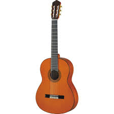
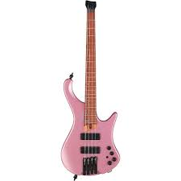
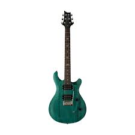
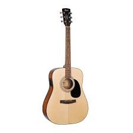

Back to Main Page
More Guitars
- Electric Guitar: Perfect for rock, blues, and jazz music.
- Acoustic Guitar: Great for folk and pop songs.
- Classical Guitar: Known for its soft nylon strings and rich tone.
- Bass Guitar: Essential for the rhythm section in any band.
- Unique Guitars: Custom-made instruments for enthusiasts.
CHECK THIS OUT
Electric Guitar - Strat - Fender Squier
.jpg)
- The perfect choice for pop, blues, and jazz music.
- Great sound, best choice for beginner.
$500 included tax
Classic Guitar - Nylon String - Fender

- With nylong string it is one of the best solutions for player.
- Warm sound, easy to play.
$200 included tax
- Electric Guitar - Semi Hollow - D&D
.jpg)
- Elevate your game with the gear that fuels your passion .
- Warm sound, easy to play.
$1000 included tax
- Bass Guitar - Ibanez - EHB1000S

- Perfect choice for bass players, modern design and balanced sound, ideal for studio use. .
- Ideal option for entering the world of modern boutique electric bass guitars..
$700 included tax
- Electric Guitar - PRS SE CE24 Standard Satin

- Known for their warm and balanced tone, with a focus on clarity and articulation. .
- Comfortable neck profile that allows for easy and smooth playability..
$1200 included tax
- Ascoutic Guitar - Cort - Standard AD810E

- The body is made of wood and the neck is also made of wood..
- Acoustic guitars are the most popular type of guitar, and with good reason.
$650 included tax